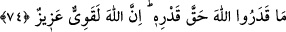

puthanenin kapısını üzerlerine kapatırlardı. Sinekler pencereden girip onları yerler,
birkaç gün sonra koku ve baldan onlarda iz ve eser kalmazdı. Müşrikler onları putların
yediğini düşünerek sevinirlerdi. Hak Teâlâ putların acziyet ve güçsüzlüklerinden şöyle
haber verir: Ne sineği yaratmaya kadirdirler ne de onları kendilerinden def etmeye.”
“İsteyen de âciz, kendinden istenen de!” Yâni puta tapan da taptığı da yahut putlardan
güzel koku ve bal gibi bir şey alıp kapmak isteyen sinek de kendisinden bunlar istenen
put da âcizdir.
74. Onlar, (Bu âciz putları Allah’a ortak koşmak suretiyle) Allah’ın kadrini
hakkıyla bilemediler. Hiç şüphesiz Allah, çok kuvvetlidir, çok üstündür.
“Onlar,” sinekten kendisini koruyamayan ve ona galebe çalamayan putları O’na ortak
koşmak ve eşyanın münâsebet bakımından O’na en uzak olanına ilâh ismi vermek
sûretiyle: “Allah’ın kadrini hakkıyla bilemediler.” Yâni O’nu gereği gibi tanıyamadılar
ve gereği gibi O’na tâzim gösteremediler.
“Hiç şüphesiz Allah,” mümkin varlıkların tamamını yaratmak ve mevcûdatı bütünüyle
yok etmek konusunda “çok kuvvetlidir, çok üstündür.” Eşyânın hepsine gâliptir. Hiçbir
şey O’na gâlip gelemez. Taptıkları ilâhlar ise bunların en azından bile âciz ve en
zelilinin karşısında bile mahkumdur.
İbn Atâ der ki: “Sinek onlardan bir şey kapsa…” sözü mahlûkatın güç ve tâkatlerine
delâlet etmektedir. En heybetli ve mülkü/saltanatı en büyük olan kimse bile
yaratılmışların en âciz ve zayıfından sakınma imkânı bulamaz. Bu onun aczini,
zayıflığını, kulluğunu, zilletini bilmesi ve sahip olduğu dünyalık ile Âdemoğulları
arasında hemcinslerine karşı övünmemesi içindir.
Âcizlerin kulu olan âcizler
Bir işle karşı karşıya kalınca birbirinden utanırlar
Acziyet ve kudret, birbiri için gereklidir
O hâlde bütün halk, birbirinden daha âcizdir
Kuvvet Hak’tadır, güç de O’nun hakkıdır
O’nunki beyin, öz, halkın sahip olduğu ise deridir
Vâsitî, son ayet ile ilgili olarak der ki: “Hakk’ın kadrini ancak Hak bilir. Vâsıtaların,
rasûllerin, velîlerin ve sıddîkların kadrini bilmekten âciz olan kimse Hakk’ın kadrini
nasıl bilebilir? O’nun kadrini bilmek, O’ndan başkasına iltifat etmemek, zikrinden gâfil
olmamak, tâatinde gevşeklik göstermemektir. İşte o zaman O’nun kadrinin zâhirini
bilirsin. O’nun kadrinin hakîkatine gelince O’nun kadrini ise ancak yine O bilir.”